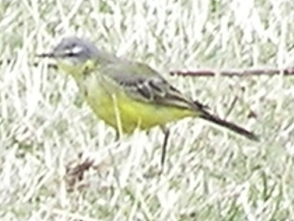
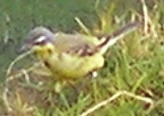
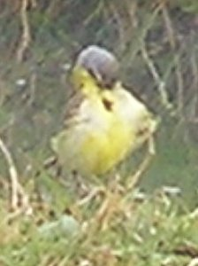

16-17cm.
|  |  |  |
The yellow wagtail was seen along the slower moving part of the river, upstream of the bridge. Identified by the combination of yellow underparts and brownish mantle. The third wagtail was seen in high farmland, well away from water.